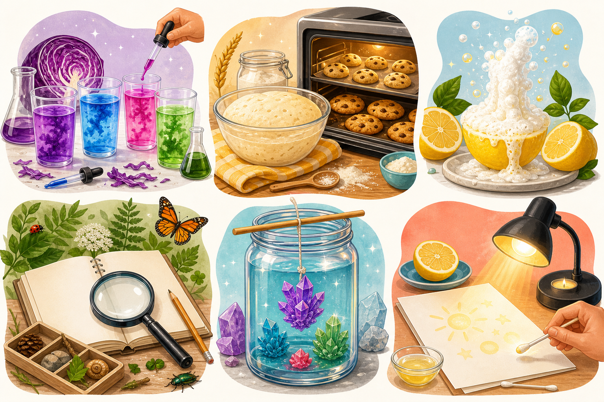

If your family loves summer break but starts craving structure after a week or two… same. Here are six STEM ideas for ages 9–12 that keep it fun and sneak in the learning.

These are the kinds of experiments that feel interesting enough for older kids, but still easy enough to pull off at home without turning your whole day into a project.
Mix mystery liquids and watch them change color like actual potion science.
Change one ingredient and see how texture, rise, or spread changes.
Use lemon halves as tiny reaction bowls for a bright, fizzy chemistry activity.
Pick one patch of yard, trail, or park and record changes across a week.
Grow crystals and compare how size and shape change over a few days.
Write hidden messages with lemon juice and reveal them later like science spies.